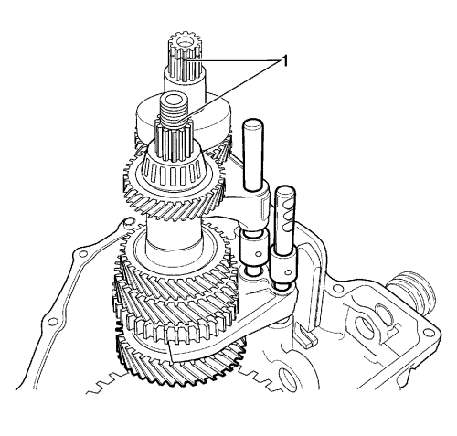
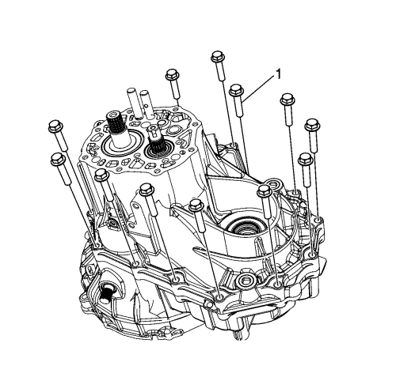
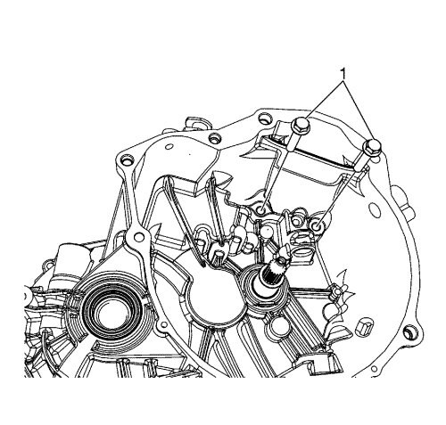
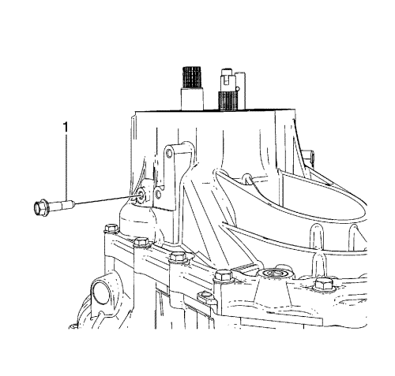
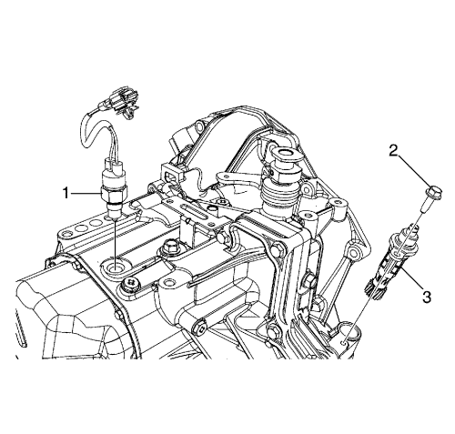
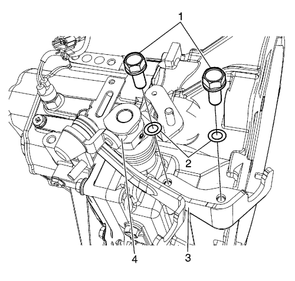
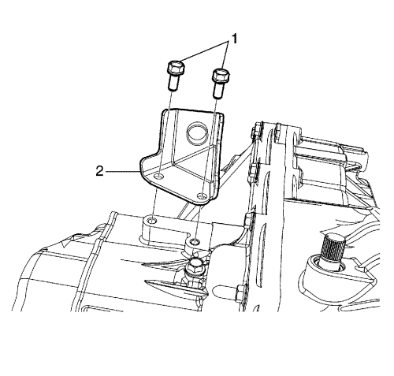

Nota: Aplique aceite para engranajes al montar las piezas internas de la caja de cambios.
- Monte la nueva junta de aceite del eje primario (2) usando la herramienta de montaje para juntas de ejes primarios DT-50179 (1).
- Monte la nueva junta de aceite del lado derecho del diferencial (4) usando la herramienta de montaje para juntas de aceite DT-49088 (3).
- Monte la nueva junta de aceite del lado izquierdo del diferencial (2) usando la herramienta de montaje para juntas de aceite DT-50181 (1).
- Monte el canalón de aceite (1).
- Monte el cojinete de agujas del eje selector y el cambio usando la herramienta de montaje de cojinetes de agujas DT-49083 (1) y la herramienta de desmontaje y montaje para cojinetes de agujas DT-49082 (2).
- Monte el conjunto del diferencial (1) en el lado derecho de la carcasa de la caja de cambios. Coloque la superficie de la corona dentada del diferencial más abajo que el lado derecho de la superficie de la carcasa de la caja de cambios.

- Monte en el mecanismo el conjunto del eje del cambio de velocidad alta y baja.
Nota: No dañe los dientes del piñón del contraeje ni la corona del diferencial.
- Empuje el mecanismo (1) haciendo coincidir la unidad con el orificio del eje primario y del contraeje.
- Monte el eje de selección de 5ª marcha y marcha atrás (1).
Precaución: Consulte Precaución con las fijaciones en la sección Prólogo
- Monte el perno y la arandela, el muelle y la bola del cambio de 5ª marcha y marcha atrás (2) y apriete a 13 N·m (10 lib. pie).
Nota: Alinee la marca del orificio del tornillo del eje del engranaje intermedio de marcha atrás con la parte que sobresale de la carcasa de la caja de cambios - lado derecho.
- Monte el conjunto del eje del engranaje intermedio de marcha atrás (1).
- Monte la palanca de cambios del engranaje de la marcha atrás (2).
- Monte los tornillos de la palanca de selección de marcha atrás (3) y apriételos a 23 N·m (17 lib. pie).
- Monte el retén de aceite del eje del selector y del cambio de marchas (1).
- Monte el fuelle del selector y del cambio de marchas (2).
- Monte el eje de selección de 5ª marcha y marcha atrás (3).
- Monte el muelle de retorno (4).
- Monte los conjuntos de muelles del selector (5).
- Monte el plato de enclavamiento del cambio de marchas (6).
- Monte la palanca de cambios (7).
- Monte los conjuntos de muelles del selector (8).
- Monte el eje del selector y cambio (9).
Nota: Al colocar los pasadores interior y exterior, las hendiduras de los 2 pasadores deben quedar simétricas.
- Monte los nuevos pasadores interior y exterior de la palanca selectora y de cambio (1).

- Monte el perno (1) y la arandela de interbloqueo del cambio (2) y apriételos hasta 23 N·m (17 lib. pie).

- Recubra la carcasa de la caja de cambios con el sellador de carcasa de caja de cambios recomendado - THREE BOND 1215 o LOCTITE 5702.
- Monte las carcasas del lado izquierdo y del lado derecho de la caja de cambios.
- Monte 12 pernos (1) en la carcasa del lado izquierdo y apriételos a 19 N·m (14 lib. pie).

- Monte los pernos (1) en la carcasa del lado derecho y apriételos a 19 N·m (14 lib. pie).

- Monte el tornillo del eje del engranaje intermedio de marcha atrás (1) y apriételo a 23 N·m (17 lib. pie).

- Monte el perno y la arandela, el muelle y la bola del cambio de 3ª-4ª marcha (2) y apriete a 13 N·m (10 lib. pie).
- Apriete la bola del eje selector (marcha 1, 2), muelle, arandela y perno (1) de baja velocidad para montar la bola del eje selector, muelle, arandela y perno (1) de la 1ª y 2ª y apriete a 13 N·m (10 lib. pie).

Nota: Haga girar el contraeje para comprobar si el cojinete y la pista exterior están bien montados.
- Monte la pista exterior de cojinete de contraeje (2) usando la herramienta de montaje de engranajes y cojinetes DT-46496 (1).
- Mida la holgura entre la superficie de la carcasa de la caja de cambios (3) y la pista exterior del cojinete (2) con la ayuda de una regla recta (1) y una galga. Consulte la Tabla de holguras de pistas exteriores de cojinete y superficie de la carcasa de la caja de cambios en Especificaciones del cambio manual
- Seleccione una arandela de compensación para que la holgura caiga dentro del estándar.
- Coloque el suplemento del cojinete del contraeje.
- Monte la placa de la carcasa izquierda (1).
- Monte los 6 nuevos tornillos (2) del plato de la carcasa izquierda y apriételos hasta 8 N·m (71 lib. pulg.).
Nota: Coloque el lado mecanizado del tetón hacia la tapa lateral.
- Monte la 5ª marcha del contraeje (3).
- Inserte el cojinete de 5ª marcha del eje primario (1) en el eje primario.
- Monte la 5ª marcha del eje primario (2).
Nota: Asegúrese de que la marca de la palanca se ve tras el montaje.
- Monte el conjunto del cubo del sincronizador de 5ª marcha.
| • | Coloque el lado más largo del tetón del cubo (2) hacia la parte interior. |
| • | Coloque las estrías biseladas del manguito (1) hacia el lado interior y monte el cubo (2) en el manguito (1). |
| • | Coloque el lado de la marca de la palanca hacia el lado exterior y monte las palancas (3) en el cubo (2). |
| • | Monte el anillo del sincronizador (4) insertando ojales de anillo en los espacios entre palancas (3). |
Nota: Coloque el lado del refuerzo más largo del cubo hacia el lado interior y haga coincidir la marca del cubo (1) con la marca perforada del eje primario (2). Asegúrese de que las marcas de la palanca (3) se vean en el conjunto de cubo del sincronizador de 5ª marcha.
- Monte la horquilla de 5ª marcha en el conjunto del cubo del sincronizador.
- Monte la horquilla de 5ª marcha (4) y el conjunto del cubo del sincronizador (5) en el eje primario.

- Monte el nuevo pasador de la brida de selección de 5ª marcha (1) con un punzón botador y un martillo.
- Monte el plato del cubo de sincronizado de 5ª (2).
- Monte el circlip del eje primario (1).

- Mueva la palanca selectora hasta la posición de 5ª marcha.
- Sujete el eje primario con el soporte del eje primario DT-49084 (1).
- Monte la nueva tuerca del contraeje y apriétela a 70 N·m (52 lib. pie).
- Calafatee la tuerca con un cincel y un martillo.

- Recubra la tapa lateral con un sellante de tapas laterales recomendado - THREE BOND 1215 o LOCTITE 5702.
- Monte la tapa lateral (2).
- Monte 8 pernos del velocímetro (1) y apriételos a 10 N·m (89 lib. pulg.).

- Monte el conjunto del engranaje conducido del velocímetro (3).
- Monte el perno del engranaje accionado del velocímetro (2) y apriételo hasta 6 N·m (53 lib. pulg.).
- Monte el interruptor de la luz de marcha atrás (1) y apriételos hasta 17 N·m (13 lib. pie).

- Monte el selector del cambio, el soporte del cable de la palanca de cambio (3) y el casquillo (4).
- Monte el selector y las arandelas de soporte del cable de la palanca del cambio (2) y los pernos (1) y apriételos a 23 N·m (17 lib. pie).

- Coloque el soporte del cable de embrague (2)y los pernos (1) y apriételos a 23 N·m (17 lib. pie).
- Monte el eje, el casquillo y el cojinete de desembrague Consultar Desmontaje del cojinete de desembrague .
- Monte el brazo de desembrague. Consultar Sustitución de la palanca del pedal de embrague .
- Monte el conjunto del cambio. Consultar Sustitución de la caja de cambios .